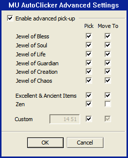

General
Installation:
1] Donwload latest version from muonline.ktemelkov.info
2] Unzip to a folder on hard drive
Startup:
1] Start ClickerGUI.exe executable file.
2] An small icon will apear on the taskbar system tray area.
3] Run the game.
4] Use the hotkeys described in this document in the game window to start/stop clicker or open the settings dialog.
Hotkeys:
[F6] - Start bot mode
[F7] - Start right-click mode
[F8] - Stop clicker
[F9] - Open settings window
[SHIFT+F9] - Open advanced settings window (Elite version only)
[F10] - Start new instance of the game (Elite version only)
[F11] - Switch between game instances (Elite version only)
[F12] - Show/Hide game
Settings Window

When the settings window is open the game screen will go black. It will turn back to normal when the window is closed. The settings window will not open if one of the 'bot' or 'right-click' modes is active.
General Settings:
These options will have effect only in bot mode (Hotkey: [F6]). General parameters have effect for all game character classes.
Enable auto-pick-up (press 'SPACE')
When this option is checked a SPACE key event will be generated every one second while the 'bot' mode is active. This will pick up items, jewels and zen from the ground.
NOTE: This option will have no effect if the 'advaced pick-up' option in the 'Elite' version is enabled.
Enable auto-repair
When this option is active the clicker will open the inventory and repair the weapon(s), armors and rings each 15 minutes while running in 'bot' mode.
Enable auto-heal (press 'Q')
When this option is active a 'Q' key will be pressed at specified interval while the bot is active.
Auto-heal time
Sets the time interval at which 'Q' key event will be generated.
Stealth options (Elite version only)
This option enables certain bot actions to fool the GM's that a human user is currently playing.
Auto-speak - The bot will automatically reply if someone speaks near your character. The bot will pick a random sentence from the 'autosay.txt' file located in the folder where MU AutoClicker is installed.
Stop zen pick-up - The bot will suspend the auto-pick-up of zen if meets another character and will resume the pick-up of zen when the other character disappears.
Stop move-to-pick - The bot will pick-up only the items near your character if another player is within your character's sight.
Stop all pick-up - The bot will suspend the auto-pick-up if meets another character and will resume the auto-pick-up when the other character disappears.
Auto-type '/re off' command (Elite version only)
If this option is enabled a '/re off' command will be typed on entering, and '/re on' command will be typed when leaving 'bot' mode.
Exit game at level 400 (Elite version only)
If this option is enabled the bot will automaticaly close the game client when the character reaches level 400.
Class Settings:
This section describes specific settings per player character class.
Character Class
Sets the active character class.
Dark Lord Settings
The Dark Lord will attack at random locations on the screen with the configured attack skill, perodically using 'Critical Damage' and 'Earthquake' skills if enabled.
Attack skill slot
Specify which is the in game hotkey for selecting the desired attack skill (usually 'Fire Burst').
'Critical Damage' skill slot
Specify which is the in game hotkey for selecting the 'Critical Damage' skill. You can switch on/off auto-casting of the skill with the checkbox control to the right of the slot selection option. When checked the 'Critical Damage' skill will be used each 30 seconds when running in 'bot' mode.
Dark horse skill slot
Specify which is the in game hotkey for selecting the 'Erthquake' skill of the dark horse. You can switch on/off auto-casting of the skill with the checkbox control to the right of the slot selection option. When checked the 'Earthquake' skill will be used each 15 seconds when running in 'bot' mode.
No-click margin from screen edge
In 'bot' mode the software sends mouse click events at random locations of the game screen. This parameter sets a border with specified size from the screen edge in which the clicker will not generate mouse events. This will decrease distance at which the character will attack. The range of the attack skills usualy do not cover the whole screen and the character automatically moves towards distant targets. Increasing the value of this parameter will prevent such unwanted movements.
When neigther of the 'Critical Damage' nor 'Earthquake' skills is enabled the bot will attack with the last in game selected skill, not with the specified in the 'Attack skill slot' parameter.
Energy Elf Settings
The Energy Elf will periodically cast 'Greater Damage', 'Greater Defence' and 'Heal' skills (whichever is enabled) over specified number of party members including itself. If no party members are selected the Energy Elf will cast the skills only on itself.
Damage skill slot
Specify which is the in game hotkey for selecting the 'Greater Damage' skill. You can switch on/off auto-casting of the skill with the checkbox control to the right of the slot selection option.
Defence skill slot
Specify which is the in game hotkey for selecting the 'Greater Defence' skill. You can switch on/off auto-casting of the skill with the checkbox control to the right of the slot selection option.
Healing skill slot
Specify which is the in game hotkey for selecting the 'Heal' skill. You can switch on/off auto-casting of the skill with the checkbox control to the right of the slot selection option.
Party members
Specify the number of party members to buff.
Agility Elf Settings
The Agility Elf will automatically rotate and shoot using the 'Tripple Shot' skill of the equpped bow or crossbow.
'Tripple Shot' skill slot
Specify which is the in game hotkey for selecting the 'Tripple Shot' skill of the equpped bow or crossbow. It can be set to the hotkey for the 'Penetration' skill thought it is not so effective as the 'Tripple Shot'. 'Ice Arrow' skill is not supported yet as it requres a right click on the target to work.
'Infinity Arrow' skill slot
Specify which is the in game hotkey for selecting the 'Infinity Arrow' skill. You can switch on/off auto-casting of the skill with the checkbox control to the right of the slot selection option. The bot will cast this skill each 30 seconds to prevent arrows/bolts to deplete.
Change attack direction time
This parameter specifies the time to shoot in one direction. After the specified number of milliseconds elapse the Agility Elf will rotate to next shooting direction.
When the 'Infinity Arrow' skill is not enabled the bot will attack with the last in game selected skill.
Blade Knight Settings
The Blade Knight will attack all targets within a specified distance with selected skill, periodically casting 'Greater Fortitude' skill.
Attack skill slot
Specify which is the in game hotkey for selecting the desired attack skill (can be 'Twisting Slash', 'Rageful Blow', 'Death Stab', etc. ).
'Greater Fortitude' skill slot
Specify which is the in game hotkey for selecting the 'Greater Fortitude' skill. You can switch on/off auto-casting of the skill with the checkbox control to the right of the slot selection option. When checked the 'Greater Fortitude' skill will be used each 30 seconds when running in 'bot' mode.
Attack distance
In 'bot' mode the software sends mouse click events at random locations of the game screen. This parameter sets the maximum distance from the character position in pixels at which the clicker can generate mouse events. As the attack distance of most of the skills is not very long, increasing this value may lead to unwanted character movement across the screen to reach the selected target.
Dark Wizard Settings
The Dark Wizard will attack all targets on screen with selected skill, periodically casting 'Mana Shield' skill.
Attack skill slot
Specify which is the in game hotkey for selecting the desired attack skill (can be the mostly used 'Evil Spirits' or 'Ice Storm', 'Death&Decay', 'Power Wave', 'Lightning' etc. ).
'Mana Shield' skill slot
Specify which is the in game hotkey for selecting the 'Mana Shield' skill (a.k.a. 'Sould Barrier'). You can switch on/off auto-casting of the skill with the checkbox control to the right of the slot selection option. When checked the 'Mana Shield' skill will be used each 30 seconds when running in 'bot' mode.
Attack distance
In 'bot' mode the software sends mouse click events at random locations of the game screen. This parameter sets the maximum distance from the character position in pixels at which the clicker can generate mouse events. As the attack distance of most of the skills is not very long, increasing this value may lead to unwanted character movement across the screen to reach the selected target.
Magic Gladiator Settings
The Magic Gladiator will rotate and attack with last in game selected skill.
Change attack direction time
This parameter specifies the time to attack in one direction. After the specified number of milliseconds elapse the Magic Gladiator will rotate to next attack direction. This parameter is useful when using 'Power Slash' skill. It has no effect when attacking with 'Evil Spirits' skill.
Advanced Settings Window
When the advanced settings window is open the game screen will go black. It will turn back to normal when the window is closed. The settings window will not open if one of the 'bot' or 'right-click' modes is active.
Enable advanced pick-up
When checked it will override the 'Enable auto pick-up' setting from the main settings window and will enable pick-up only for the selected items from the list below.
Pick
Enable/Disable auto-pick of the specified item.
Move To
If enabled the character will move to the item coordinates, pick the item and then return back to spot. If not enabled the character will pick only the items that are in close range.
Command Line Interface (Elite version only)
The bot will accept commands via chat messages in the following format:
//[command] [arguments]
//[command] [arguments]
To use the command line interface just press ENTER for a regular chat message and use the commands listed below.
//autopick <on|off>
Turn on/off automatic pick-up
//autosay <on|off>
Turn on/off automatic reply if another character speaks near your hero
//die
Just funny :) Your hero do not really die on the server side.
//exit400 <on|off>
Turn on/off automatic exit from game on level 400
//help
Displays list of commands
//pdist <distance>
Sets the maximum distance to pick up an item
//pick [<item code high> <item code low>|clear]
Adds a custom item code to the pick-up list or clears the pick-up list
Please find below some examples of this command:
'//pick 15 16' - Add for auto-pick Scroll of Decay
'//pick 14 41' - Add for auto-pick Gem Stone
//run <script filename>
Runs a script in a text file. The filename must be written with the file extension and can contain a directory path relative to the clicker's executable folder. This command will execute the script imediatelly even if there is another character near your hero.
//set_pick_opt <bless|soul|chaos|joc|jog|jol|exl|zen> <on|off> <on|off>
Sets the pick and move-to options for items (used by the GUI). For example to make the bot move to jewels of bless and pick them use: '//set_pick_opt bless on on'; to make the bot pick blesses without moving to them use: '//set_pick_opt on off'.
This command outputs no messages.
//set_stealth_opt <susp_zen_pick|susp_move_pick|susp_pick> <on|off>
Sets the stealth settings. These settings have effect when another character approaches your hero and are used to conseal the fact that you are using a bot.
//script <load [filename]|on|off|toggle>
Loads/starts/stops a script. The script will not execute automatically on load you have to use //script on, //script off to start or stop it. The script will pause automatically if another character approaches your hero. You can use the partners.txt file to select which characters you trust. The script will not pause if your hero meets a character from the trusted list.
//drop [<item code high> <item code low>|clear]
Adds a specific item to be automatically dropped when picked or clears the list of auto-drop items. This option will have effect only if the //autopick setting is 'on' (e.g. when the bot is running). It is useful to get rid of items like hearts, firecrackers, boxes of luck etc. that create an item when dropped.
//itemcode <on|off>
Use to display the code of an item when placed to the inventory. Yes, you can see the item codes with this option switched on.
Script Interface (Elite version only)
The bot can execute simple scripts. Scripts can be used to automate the task of manually adding custom items for pick-up. Scripting language is very simple and can be learned by the following example: script_example.txt
Script files must be placed in the bot folder or subfolder and can be loaded and executed with the following command:
//run [relative path to script file]